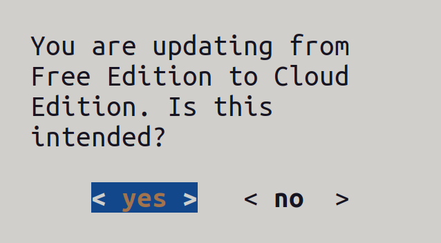
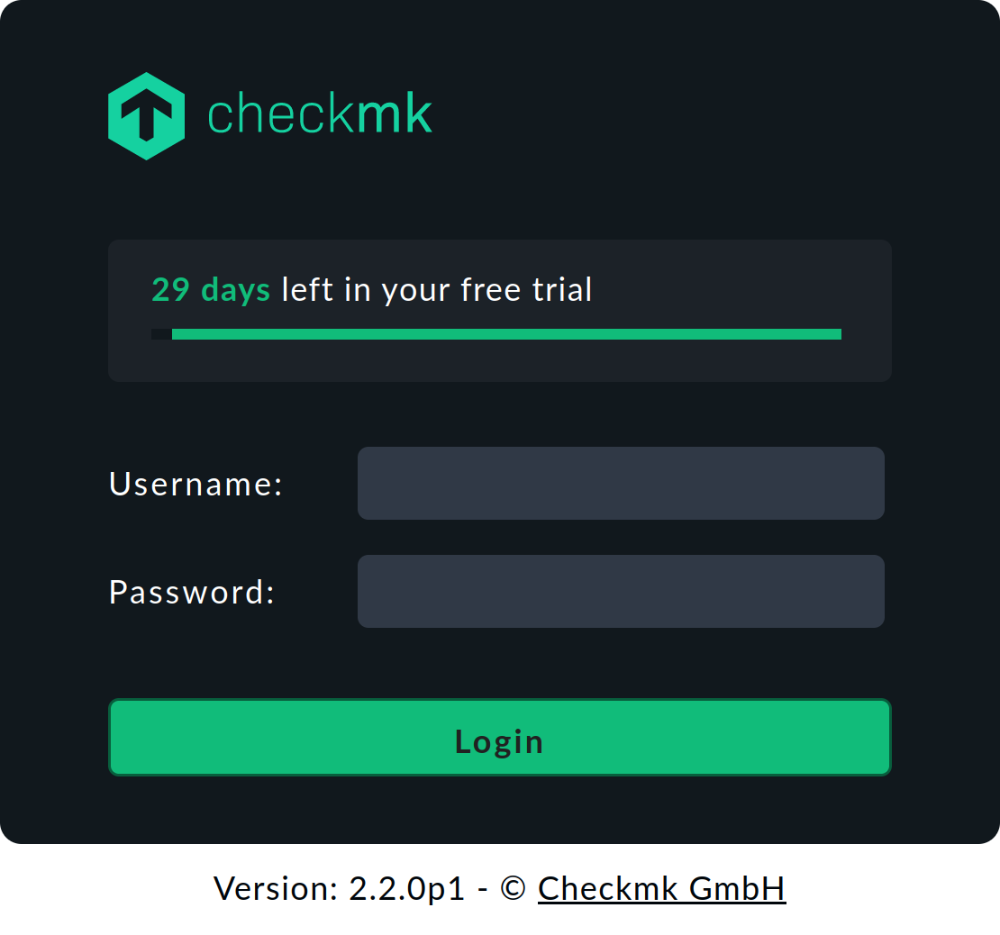

1. Einleitung
In diesem Artikel finden Sie die wichtigsten Themen, die für das Update Ihrer Checkmk-Version 2.1.0 auf 2.2.0 relevant sind.
Wir empfehlen Ihnen, vor dem Update den kompletten Artikel durchzulesen, damit Sie genau wissen, was auf Sie zukommt: vor, während und nach dem Update.
2. Vorbereitungen
In diesem Kapitel erhalten Sie die Übersicht der Themen, um die Sie sich kümmern sollten, bevor Sie das Update durchführen. Wahrscheinlich wird nicht jedes der Themen für Sie relevant sein: Bei einem solchen können Sie intern einen Haken setzen und sich gleich das nächste Thema vornehmen.
2.1. Backup
Wie vor jedem Update einer produktiven Software sollten Sie auch vor dem von Checkmk die Aktualität Ihrer Backups prüfen.
Betrifft Sie das? Ja.
Was müssen Sie tun? Wenn Sie Ihre Backups automatisiert über Setup > Maintenance > Backups erstellen, prüfen Sie dort, ob die letzten Backup-Aufträge fehlerfrei durchgelaufen sind.
Weitere Informationen finden Sie in den Artikeln zu Backups und zum Thema Instanzen sichern und wiederherstellen.
2.2. Auswahl der Checkmk-Edition
Die Checkmk-Editionsfamilie hat Zuwachs bekommen mit der brandneuen  Checkmk Cloud Edition.
Was diese zu bieten hat, können Sie im Artikel zur Cloud Edition nachlesen.
Dafür heißt es Abschied nehmen von der Checkmk Enterprise Free Edition, die es in der 2.2.0 nicht mehr gibt.
Checkmk Cloud Edition.
Was diese zu bieten hat, können Sie im Artikel zur Cloud Edition nachlesen.
Dafür heißt es Abschied nehmen von der Checkmk Enterprise Free Edition, die es in der 2.2.0 nicht mehr gibt.
Die Möglichkeiten der Free Edition leben aber weiter in der Cloud Edition: das zeitlich begrenzte Ausprobieren und das dauerhafte Nutzen einer der kommerziellen Editionen in kleinem Rahmen. Eine Änderung gibt es allerdings bei der Limitierung zur dauerhaften Nutzung: Während Sie in der Free Edition Edition bis zu 25 Hosts in einer Instanz überwachen können, sind es in der Cloud Edition 750 Services in einer Instanz.
Betrifft Sie das? Falls Sie in der Version 2.1.0 die Free Edition nutzen, müssen Sie sich in der 2.2.0 eine neue Edition suchen. Eine Kurzvorstellung der Checkmk-Editionen finden Sie hier.
Was müssen Sie tun? Sollte in Ihrem Fall die Limitierung auf 25 Hosts der Free Edition ausreichend gewesen sein, die 750 kostenlosen Services der Cloud Edition aber nicht, so können Sie entweder eine Subskription erwerben und das Upgrade auf eine der kommerziellen Editionen durchführen — oder Sie entscheiden sich für das Downgrade auf die kostenlose Raw Edition. Führen Sie das Upgrade oder das Downgrade der Edition vor dem Update auf die Version 2.2.0 durch. Beachten Sie die dabei auch die Hinweise im Artikel zu Updates und Upgrades, insbesondere beim Downgrade auf die Raw Edition.
Sollten Sie mit der neuen Grenze von 750 Services keine Probleme haben, dann bietet sich der Upgrade der Free Edition auf die neue Cloud Edition an, so wie er weiter unten beschrieben ist.
2.3. Linux-Distributionsversionen
In der Checkmk Version 2.2.0 werden einige veraltete Distributionen nicht mehr unterstützt werden.
Betrifft Sie das? Das betrifft Sie, wenn auf Ihrem Checkmk-Server eine der folgenden – in der 2.1.0 noch unterstützten – Linux-Distributionen installiert ist:
Debian 9 Stretch
Ubuntu in Long Term Support (LTS) Versionen 16.04 Xenial und 18.04 Bionic
Ubuntu in Short Term Support (STS) Version 21.10 Impish
SLES 12 SP3 und SP4
SLES 15 ohne Service Pack
Was müssen Sie tun? Führen Sie vor dem Update von Checkmk zuerst ein Versions-Upgrade der Linux-Distribution durch. Achten Sie darauf, dass die Zielversion der Linux-Distribution von Checkmk 2.1.0 und 2.2.0 unterstützt wird. Welche Linux-Distributionsversionen Checkmk unterstützt, erfahren Sie in der Update-Matrix für 2.2.0 und auf der Download-Seite nachdem Sie die Checkmk-Version und Ihre Linux-Distribution ausgewählt haben.
Neuere Ubuntu STS-Versionen erhalten nicht mehr über den gesamten Produkt-Lifecycle von Checkmk 2.2.0 Unterstützung. Nutzern dieser Versionen geben wir jedoch die Möglichkeit, nahtlos auf die nächste LTS 24.04 zu aktualisieren. Details können Sie in der Richtlinie zur Betriebssystemunterstützung (OS Support Policy) nachlesen.
2.4. Browser-Unterstützung
Checkmk 2.2.0 nutzt neue JavaScript-Funktionen, die in älteren Browsern nicht zur Verfügung stehen. Welche Browser in welchen Versionen unterstützt werden, steht in den Release notes.
Betrifft Sie das? In der Regel werden Sie auf Desktop-Systemen automatische Updates auf die neueste Version aktiviert haben.
Was müssen Sie tun? Prüfen Sie die verwendete Browser-Version und installieren Sie gegebenenfalls einen aktuelleren Browser. Wenn Sie für die Anzeige von Dashboards Single Board Computer, Smart TVs oder Digital Signage Lösungen verwenden, auf deren Systembrowser Sie keinen Einfluss haben, testen Sie vor dem Update, ob benötigte Dashboards korrekt angezeigt werden. Kontaktieren Sie gegebenenfalls den Hardware-Hersteller für Updates.
2.5. Der Agent für Linux
In Checkmk 2.2.0 unterstützt der Linux-Agent nicht länger Python 2.6 für Plugins.
Betrifft Sie das? Nur, wenn bei Ihnen sehr alte Linux-Systeme im Einsatz sind (Python 2.6 ist von Oktober 2008 und wurde ab Juli 2010 von Python 2.7 abgelöst) und Sie auf diesen in Python geschriebene Agentenplugins nutzen.
Was müssen Sie tun? Identifizieren Sie die betroffenen Systeme und aktualisieren Sie die installierten Agenten auf die letzte verfügbare Patch-Version der 2.1.0. Falls automatische Agenten-Updates konfiguriert sind, deaktivieren Sie diese vor dem Update der Checkmk-Instanz. Sie können dann die einzelnen Komponenten Agentenskript, Plugins und lokale Checks – nach Kompatibilitätstests – manuell aktualisieren.
2.6. Der Agent für Windows
In Checkmk 2.2.0 unterstützt der Windows-Agent nicht länger Windows 6.0 (Vista und Server 2008 R1). Auf betroffenen Systemen kann der Agent von 2.1.0 aber weiter genutzt werden.
Betrifft Sie das? Nur, wenn bei Ihnen diese antiquierten Windows-Systeme (Support-Ende 11. April 2017 respektive 14. Januar 2020) noch im Einsatz sind.
Was müssen Sie tun? Identifizieren Sie die betroffenen Systeme und aktualisieren Sie die installierten Agenten auf die letzte verfügbare Patch-Version der 2.1.0. Falls automatische Agenten-Updates konfiguriert sind, deaktivieren Sie diese vor dem Update der Checkmk-Instanz.
2.7. Alte Bakery Plugins
Bakery Plugins binden Funktionen in die Agentenpakete der Agentenbäckerei (Agent Bakery) ein. Mit Werk #14648 wird in der Version 2.2.0 die Unterstützung für alte Bakery Plugins eingestellt. Dabei handelt es sich um benutzerdefinierte Plugins, die in der Version 1.6.0 und früher verwendet wurden, und noch nicht auf die in der 2.0.0 eingeführte Bakery-API migriert wurden.
Betrifft Sie das?
Die Agentenbäckerei und damit auch die Bakery-API sind nur für Benutzer der kommerziellen Editionen relevant.
Vor der Einführung der Bakery-API wurden die Bakery Plugins im Instanzverzeichnis unter ~/local/share/check_mk/agents/bakery/ abgelegt.
Um festzustellen, ob bei Ihnen alte Plugins vorhanden sind, können Sie hier nach der Zeichenkette bakery_info[ suchen.
Seit der 2.0.0 zeigt Checkmk außerdem beim Backen von Agentenpaketen mit alten Bakery Plugins eine Warnung an.
Diese können Sie sich auch nachträglich anzeigen lassen unter Setup > Maintenance > Background jobs im Abschnitt Agent baking.
Beim Backen per Kommandozeile mit cmk -A erfolgt die Warnung als Befehlsausgabe.
Was müssen Sie tun? Migrieren Sie alte Bakery Plugins auf die Bakery-API. Sie finden eine Einführung in die Nutzung der API im Artikel zur Bakery-API.
2.8. Python 3.11
Checkmk 2.2.0 aktualisiert Python von 3.10 auf 3.11. Dies führt zu einer strengeren Interpretation regulärer Ausdrücke. Modifiers als „Inline Flags“ sind seit Python 3.6 als deprecated markiert und führten bislang beim Test im Python-Prompt zu einer Warnung. In Python 3.11 sind sie nur am Anfang eines regulären Ausdrucks zulässig.
Betrifft Sie das?
Es betrifft Sie mit hoher Wahrscheinlichkeit, wenn Sie den Modifier (?i) benutzen, um anzugeben, dass der nachfolgende reguläre Ausdruck ohne Berücksichtigung von Groß- und Kleinschreibung ausgewertet werden soll.
Da Checkmk aus Performance-Gründen an einigen Stellen mehrere reguläre Ausdrücke zu einem einzigen kombiniert, kann diese Änderung auch alleine betrachtet valide reguläre Ausdrücke (Modifier am Anfang) betreffen.
Was müssen Sie tun?
Identifizieren Sie alle regulären Ausdrücke, welche Inline Flags nutzen.
Hierfür genügt es in der Regel, auf die Zeichenkette (? zu untersuchen, beispielsweise mit diesem Befehl:
OMD[mysite]:~$ find etc/ -type f -exec grep -Hn '(?.)' {} \;Passen Sie die betroffenen regulären Ausdrücke an. Da Modifier weiterhin gültig sind, wenn ihr Anwendungsbereich angegeben wird, können Sie einen vorhandenen regulären Ausdruck
(?i)somestringäquivalent umschreiben auf:
(?i:somestring)2.9. Python-Module deinstallieren
Die Aktualisierung von Python von 3.10 auf 3.11 betrifft auch in einer Instanz nachinstallierte Module. In vielen Fällen sind nachinstallierte Module mit Python 3.11 inkompatibel. Schlimmstenfalls überschreiben veraltete Module Funktionalität der von Checkmk mitgelieferten Module.
Betrifft Sie das? Dies betrifft Sie nur, wenn Sie für selbst geschriebene oder aus der Exchange bezogene Spezialagenten oder agentenbasierte Check-Plugins explizit Python-Module nachinstalliert haben. Wenn Sie unsicher sind, führen Sie die im folgenden Schritt beschriebene Prüfung durch.
Was müssen Sie tun?
Finden Sie zunächst heraus, ob und – wenn ja –, welche Python-Module in der Instanz installiert sind.
Suchen Sie hierfür die Verzeichnisse dist-info und egg-info:
OMD[mysite]:~$ find ~/local/lib/python3/ -type d -name '*.*-info'
local/lib/python3/cryptography-41.0.5.dist-info
local/lib/python3/ecdsa-0.18.0.dist-infoNotieren Sie die installierten Module und deinstallieren Sie diese anschließend:
OMD[mysite]:~$ pip3 uninstall cryptography ecdsaWie Sie mit deinstallierten Python-Modulen nach dem Update umgehen, erfahren Sie weiter unten.
2.10. Ungültige Benutzernamen
Ab Version 2.2.0 ist die Verwendung bestimmter Sonderzeichen in Benutzernamen nicht mehr zulässig.
Mit ungültigen Benutzernamen ist ein Update auf die 2.2.0 nicht möglich, da omd update mit einem Fehler abbricht.
Benutzernamen in Checkmk dürfen nur Buchstaben (im Sinne der Unicode-Datenbank), Ziffern und die folgenden Sonderzeichen enthalten: Bindestrich (-), Unterstrich (_), Punkt (.), At-Zeichen (@) und Dollarzeichen ($).
Als erstes Zeichen erlaubt ist nur ein Buchstabe, eine Ziffer, ein Unterstrich oder ein Dollarzeichen.
Betrifft Sie das?
Beim Erstellen lokaler Benutzer über Setup > Users hat Checkmk schon seit längerem, d.h. bereits vor der Version 1.6.0, ungültige Benutzernamen abgelehnt.
Es sind also, wenn überhaupt, nur Benutzernamen aus externen Verbindungen wie LDAP betroffen.
Mit dem Werk #14393 warnt Sie Checkmk seit Version 2.1.0p20 bei ungültigen Benutzernamen — zum einen bei der Ausführung von omd update und zum anderen in der Benutzerverwaltung, die Sie über Setup > Users aufrufen können.
Die Benutzernamen werden in der Spalte ID angezeigt und bei ungültigen Benutzernamen steht dort eine Warnung.
Was müssen Sie tun? Ändern Sie alle gefundenen ungültigen Benutzernamen an der Quelle.
2.11. Unsichere Hashfunktionen für Passwörter
Ab Version 2.2.0 ist die Verwendung von unsicheren und veralteten Hashfunktionen für Passwörter nicht mehr erlaubt. Dies betrifft die Hashfunktionen DES-Crypt, MD5-Crypt, Apr MD5-Crypt und SHA-256 Crypt. Obwohl letztere für Passwörter immer noch als sicher gilt, sollen die Passwort-Hashes aller Benutzer auf die modernere bcrypt Hashfunktion umgestellt werden.
Ein lokaler Benutzer, dessen Passwort mit einer der genannten, veralteten Hashfunktionen umgewandelt wurde, kann sich in der Version 2.2.0 nicht mehr anmelden.
Betrifft Sie das?
Checkmk warnt Sie seit Version 2.1.0p16 (siehe Werk #14391), wenn unsichere Passwort-Hashes in der Datei ~/etc/htpasswd des Instanzverzeichnisses gefunden wurden.
Bei der Ausführung von omd update wird eine Warnmeldung mit allen betroffenen (lokalen) Benutzernamen angezeigt.
Benutzer aus externen Verbindungen wie LDAP sind nicht betroffen.
In der 2.1.0 wurde dann jeder betroffene Benutzer entweder nach der Anmeldung aufgefordert, ein neues Passwort zu wählen, oder der Hash wurde automatisch bei der Anmeldung im Hintergrund aktualisiert. Wenn sich ein Benutzer seitdem jedoch überhaupt nicht mehr angemeldet hat, ist es möglich, dass immer noch der veraltete Passwort-Hash verwendet wird. Dieser Benutzer wird sich nach dem Update auf die Version 2.2.0 nicht mehr anmelden können.
Was müssen Sie tun?
Um den Zugang für einen betroffenen Benutzer wiederherzustellen, müssen Sie dessen Passwort manuell zurücksetzen.
Ein neues Passwort vergeben Sie entweder in der Benutzerverwaltung über Setup > Users oder auf der Kommandozeile mit dem Befehl cmk-passwd <username>.
Verwenden Sie für Passwortänderungen nur den Befehl cmk-passwd und nicht länger htpasswd, der aus der Apache-Installation kommt und ohne zusätzliche Optionen veraltete Passwort-Hashes erzeugen würde.
2.12. Versehentlich deaktivierte Benachrichtigungen
Bei Systemen, die vor langer Zeit einmal von Checkmk 1.4.0 auf 1.5.0 aktualisiert wurden, kann es vorkommen, dass nach dem Update von 2.1.0 auf 2.2.0 Benachrichtigungen nicht mehr funktionieren.
Betrifft Sie das? Das Problem tritt nur auf Installationen auf, die von Checkmk 1.4.0 auf 1.5.0 vor p8 aktualisiert wurden. Und dort nur bei Benutzern, die zwischenzeitlich nicht mehr bearbeitet und gespeichert wurden. Bei Checkmk-Installationen, die von Checkmk 1.4.0 auf 1.5.0p8 oder später aktualisiert wurden, oder erst mit Checkmk 1.5.0 oder später installiert wurden, tritt es überhaupt nicht auf.
Was müssen Sie tun?
Öffnen Sie die Nutzereinstellungen von Nutzern, die Nachrichten erhalten sollen und speichern Sie diese einmal – auch wenn vermeintlich korrekte Einstellungen angezeigt werden.
Da dies bei einer großen Anzahl von Nutzern wenig praktikabel ist, können Sie die nötigen Änderungen/Überprüfungen auch in der Konfigurationsdatei ~/etc/check_mk/conf.d/wato/contacts.mk vornehmen.
Details erklärt das Werk #6417.
2.13. Instanzbenutzer und System-Apache
Jede Checkmk-Instanz stellt ihre HTTP-Dienste (GUI, APIs) über einen eigenen instanzspezifischen Apache-Prozess bereit. Den globalen Zugriff auf diesen instanzspezifischen Apache stellt der System-Apache bereit, der je nach Systemkonfiguration die Ports 80 und 443 für externe Anfragen öffnet.
Um etwas über den instanzspezifischen Apache zu erfahren, liest der System-Apache eine vom Instanzbenutzer bereitgestellte Reverse-Proxy-Konfiguration. Ein böswilliger Instanzbenutzer könnte nun den System-Apache dazu bringen, Code als Root-Benutzer auszuführen, da der System-Apache normalerweise zunächst mit Root-Rechten gestartet wird.
Um diese Sicherheitslücke zu schließen, müssen wir die System-Apache-Konfiguration vom Zugriff des Instanzbenutzers trennen.
Um die Erweiterung der Rechte zu beseitigen, muss für jede Instanz einmal der Befehl omd update-apache-config <sitename> ausgeführt werden.
Im Werk #14281 erhalten Sie weitere, ausführliche Informationen zu diesem Thema und zusätzliche Hinweise, die auch die Ausführung des Befehls omd update betreffen, wenn mit diesem bestimmte Optionen geändert werden.
Betrifft Sie das?
Seit der Version 2.1.0p7 werden Sie bei der Ausführung von omd update dazu aufgefordert, zusätzlich omd update-apache-config <sitename> auszuführen.
Falls Sie dies bereits bei einem Update der 2.1.0 getan haben, ist beim Update auf die 2.2.0 nichts weiter zu tun.
Aus der bisherigen dringenden Empfehlung wird nun eine Voraussetzung beim Update auf die 2.2.0.
Was müssen Sie tun?
Führen Sie als Root-Benutzer den Befehl omd update-apache-config <sitename> aus, wenn Sie bei der Ausführung von omd update dazu aufgefordert werden.
2.14. REST-API ersetzt Web-API
Wie bereits in der 2.1.0 angekündigt, ist die Web-API (auch HTTP-API genannt) in der Checkmk-Version 2.2.0 entfernt worden. Die Web-API wird durch die REST-API ersetzt.
Betrifft Sie das? Das betrifft Sie, falls Sie eigene Skripte geschrieben haben, die noch die Web-API nutzen.
Was müssen Sie tun? Migrieren Sie alle bestehenden Skripte, die die Web-API verwenden, auf die REST-API, bevor Sie auf die Checkmk-Version 2.2.0 umsteigen. Im Artikel zur REST-API finden Sie eine Übersicht, welche REST-API-Endpunkte die Web-API-Befehle ersetzen.
2.15. Kubernetes-Monitoring
Den Checkmk 2.0.0 Spezialagenten und die zugehörigen Check-Plugins für das Kubernetes-Monitoring gibt es nicht mehr in der 2.2.0. Nutzen Sie stattdessen das in der Version 2.1.0 von Grund auf neu geschriebene und stark verbesserte Kubernetes-Monitoring.
2.16. NSCA
Wie bereits in der Version 2.1.0 angekündigt, unterstützt Checkmk 2.2.0 nicht mehr den Nagios Service Check Acceptor (NSCA). NSCA ist ein Nagios Add-on, um Ergebnisse passiver Checks von fernen Hosts in einer verteilten Nagios-Konfiguration zu erhalten. Dieses veraltete Verfahren zum Aufbau eines verteilten Monitorings bietet gegenüber den Checkmk-eigenen Verfahren keine Vorteile. Details und Hinweise zum Ersatz finden Sie im Werk #13644.
2.17. Nicht paketierte lokale Dateien
Mit lokalen Dateien können Sie die von Checkmk bereitgestellte Funktionalität anpassen und erweitern.
Diese Dateien befinden sich im lokalen Teil der Instanzverzeichnisstruktur, d.h. in ~/local.
Lokale Dateien können bei einem Update Probleme bereiten, wenn sie nicht mehr zur neuen Checkmk-Version passen.
Betrifft Sie das? Da es für Checkmk bei einem Update nicht möglich ist, die Kompatibilität von lokalen Anpassungen vollständig sicherzustellen, sollten Sie Ihre Checkmk-Instanz vor einem Update daraufhin überprüfen, ob lokale Dateien bei Ihnen verwendet werden und gegebenenfalls welche.
Was müssen Sie tun? Verschaffen Sie sich einen Überblick über nicht paketierte lokale Dateien Ihrer Checkmk-Instanz, indem Sie als Instanzbenutzer das folgende Kommando ausführen:
OMD[mysite]:~$ mkp findWerden hier Dateien aufgeführt, sollten Sie zusammen gehörende in Erweiterungspaketen (MKPs) zusammenfassen. Dies erleichtert später die Deaktivierung en bloc, sollten nach dem Update Inkompatibilitäten festgestellt werden.
2.18. Programmierschnittstellen
In Checkmk 2.2.0 wurden einige intern genutzte Programmierschnittstellen (APIs) umgebaut.
Betrifft Sie das? Das Thema APIs kann Sie betreffen, wenn Sie die mit Checkmk ausgelieferten um Ihre eigenen, selbst geschriebenen Checks erweitert haben und/oder wenn Sie Plugins aus anderen Quellen nutzen. Da die neu strukturierten APIs als intern gelten und auch für Plugins aus der Checkmk Exchange nicht verfügbar sind, sollte die Zahl betroffener Erweiterungen gering sein.
Was müssen Sie tun? Überprüfen Sie Erweiterungen von Drittanbietern auf ihre Funktionsfähigkeit und nehmen Sie gegebenenfalls die notwendigen Anpassungen der Import-Pfade vor.
Betroffen sind:
Aufsplittung von GUI-Imports bezüglich Datasource Programs und aktiven Checks in mehrere Dateien (Werk #14716).
Aufsplittung von GUI-Imports bezüglich der Verwendung des Passwortspeichers (password store) in mehrere Dateien (Werk #14719).
Umstrukturierung des GUI-Codes (Werk #15493).
Umstrukturierung der
ValueSpec-Klasse (Werk #13094).Änderung des Geltungsbereichs der
Transform-Klasse (Werk #14821).Feinere Granulierung des Zugriffs auf Rechte eingebauter Benutzer (Werk #14824).
Ende der Unterstützung des Dashlet-Konfigurationsformats von Checkmk vor Version 1.6.0 (Werk #14297).
Ende der Unterstützung der alten Plugin-API für die HW/SW-Inventur (Werk #14084).
2.19. Inkompatible und obsolete MKPs
Über die Checkmk-Erweiterungspakete (MKPs) lässt sich Ihr Monitoring-System recht einfach und bequem erweitern. Auf der einen Seite kommt es dabei vor, dass solche MKPs nicht weiter gepflegt werden und dann ggf. mit neuen Versionen von Checkmk nicht mehr kompatibel sind. Auf der anderen Seite nehmen wir immer wieder neue Plugins und Funktionserweiterungen in Checkmk auf, weshalb MKPs mitunter obsolet werden. Ihre Funktionalität wird schlicht von Checkmk selbst sichergestellt.
Betrifft Sie das? Falls Sie MKPs installiert haben, ist aus diesem Grund eine Prüfung dieser MKPs dringend geboten — besonders vor einem umfangreichen Update. So verhindern Sie, dass inkompatible Pakete das Update behindern oder im Anschluss an das Update doppelte oder zumindest sehr ähnliche Services entstehen.
Was müssen Sie tun? Prüfen Sie hierzu Ihre installierten MKPs gegen unseren Katalog der Check-Plugins und entfernen Sie Pakete, welche inzwischen nativ von Checkmk bereitgestellt werden. Bei dieser Gelegenheit können Sie auch MKPs entfernen, die eventuell nur mal für einen Probelauf installiert worden sind. Eine Auflistung finden Sie in den kommerziellen Editionen über Setup > Maintenance > Extension packages.
Auf der Kommandozeile können Sie sich installierte Erweiterungen mit dem folgenden Befehl anzeigen lassen:
OMD[mysite]:~$ mkp list
Name Version Title Req. Version Until Version Files State
----------- ------- ------------- ------------ ------------- ----- -------------------------------
my_cool_mkp 1.0.2 Best MKP ever 2.0.0 2.3.9p99 6 Enabled (active on this site)
hello_world 0.2.1 Hello world! 2.1.0 2.1.99 6 Enabled (active on this site)Zu jedem gelistetem MKP können Sie dann in der Folge auch die Dateien anzeigen lassen, die zu dem Paket gehören:
OMD[mysite]:~$ mkp list my_cool_mkp
/omd/sites/mysite/local/lib/check_mk/base/plugins/agent_based/check_mk.py
/omd/sites/mysite/local/share/check_mk/web/plugins/metrics/custom_metrics.pySollten Sie über die Prüfung der installierten MKPs und dem Abgleich mit unserem Katalog nicht alle Pakete zuordnen können, empfiehlt sich der hiernach beschriebene Probelauf des Updates, um dabei Inkompatibilitäten zu identifizieren und dann in Ihrem produktiven Monitoring vor dem Update zu entfernen.
MKP-Verwaltung für verschiedene Checkmk-Versionen
Für die Erleichterung von Updates wurde mit Checkmk 2.1.0p22 die Möglichkeit eingeführt, MKPs in verschiedenen Versionen vorzuhalten. Beim Update wird dann das Paket für Checkmk 2.1.0 automatisch deaktiviert und das für Checkmk 2.2.0 automatisch aktiviert. Bei Nutzung eines verteilten Monitorings mit zentraler Konfiguration können Sie mit diesem Feature von der Zentralinstanz aus Pakete in verschiedenen Versionen an die Remote-Instanzen verteilen. Das klappt sogar, wenn die Remote-Instanzen eine höhere Version haben, wie es beim Update im verteilten Monitoring für eine Übergangszeit der Fall ist.
Beachten Sie, dass Sie dieses Feature nur nutzen können, wenn Sie als Ausgangsversion mindestens 2.1.0p22 verwenden! Sind diese Voraussetzungen erfüllt, können Sie auf der Zentralinstanz zusätzlich Pakete für 2.2.0 hinzufügen.
Bei der Installation eines für Checkmk 2.2.0 geschriebenen MKPs erhalten Sie unter Checkmk 2.1.0p22 und höher eine Warnmeldung:
OMD[mysite]:~$ mkp install /tmp/hello_world-0.2.2.mkp
The package requires Check_MK version 2.2.0, but you have 2.1.0p22 installed.Dieses Paket wird in der Liste der Pakete als Enabled (inactive on this site) aufgeführt:
OMD[mysite]:~$ mkp list
Name Version Title Req. Version Until Version Files State
----------- ------- ------------ ------------ ------------- ----- -------------------------------
hello_world 0.2.2 Hello world! 2.2.0 2.2.99 6 Enabled (inactive on this site)
hello_world 0.2.1 Hello world! 2.1.0 2.1.99 6 Enabled (active on this site)Details der überarbeiteten Paketverwaltung zeigt der Artikel zur Verwaltung von Erweiterungspaketen (MKPs).
2.20. Inkompatible Änderungen
Wie in jeder Checkmk Version, so gibt es auch in der aktuellen Version 2.2.0 Änderungen der Software, die Rückwirkungen auf ihre Checkmk-Installation haben können. Eine sogenannte inkompatible Änderung erfordert, dass Sie manuelle Anpassungen durchführen, um bestehende Funktionen weiterhin wie gewohnt ablaufen zu lassen und/oder neue Funktionen nutzen zu können.
Betrifft Sie das? In aller Regel wird es inkompatible Änderungen geben, die auch Ihre Checkmk-Installation betreffen. Eine generelle Aussage ist aber leider unmöglich. In diesem Artikel haben wir diejenigen Themen zusammengetragen, die für alle oder die meisten Checkmk-Installationen zutreffen. Es kann aber sein, dass es darüber hinaus weitere, für Sie relevante Änderungen gibt, zum Beispiel bei Checks, die Sie in Ihrer Installation verwenden.
Was müssen Sie tun? Nachdem Sie das Update durchgeführt haben, werden Ihnen in der Checkmk-Oberfläche Anzahl und Inhalt der inkompatiblen Änderungen angezeigt, und Sie werden aufgefordert, diese zu prüfen und zur Kenntnis zu nehmen. Also werden Sie auf jeden Fall mit diesem Thema konfrontiert werden — allerdings erst, nachdem Sie das Update durchgeführt haben.
Es ist daher eine gute Idee, sich bereits vor dem Update einen Überblick über die inkompatiblen Änderungen zu verschaffen: Öffnen Sie die Liste der Werks. (Die Software-Entwicklung von Checkmk ist in sogenannten Werks organisiert.) In der Beschreibung eines Werks finden Sie Hinweise, was gegebenenfalls zu tun ist, um die Änderung kompatibel zu machen.
Die frustrierende Nachricht: Die Werkliste einer Version ist sehr, sehr lang — selbst wenn sie nur die inkompatiblen Änderungen enthält. Die tröstliche Nachricht: An der Anzahl der Änderungen können Sie sehen, wie groß unsere Anstrengungen sind, Checkmk für Sie zu verbessern.
3. Update
3.1. Best Practices beim Update
Im Folgenden beschreiben wir bewährte Vorgehensweisen (best practices), welche wir selbst bei Updates von großen Checkmk-Umgebungen befolgen. Diese sind sicherlich nicht in jeder Umgebung Pflicht, Sie können Ihnen den Prozess des Updates jedoch erleichtern.
Checkmk-Version aktualisieren
Vor dem Update auf die Version 2.2.0 muss auf der Checkmk-Instanz die Version 2.1.0 installiert sein.
Wir haben bereits früher von einem Update mit Auslassung einer Hauptversion abgeraten, da es dazwischen einfach zu viele Änderungen gibt, die ein reibungsloses Update behindern und mit großer Wahrscheinlichkeit zu Problemen führen. Mit der Version 2.1.0 wurde aus dieser Empfehlung eine Voraussetzung — und eine Sperre eingeführt, die zum Beispiel ein direktes Update von Version 2.0.0 auf 2.2.0 verhindert.
Das Update auf 2.2.0 setzt zurzeit mindestens 2.1.0p23 voraus. Es kann aber sein, dass in der Zukunft eine bestimmte 2.2.0 Patch-Version eine höhere 2.1.0 Patch-Version für das Update voraussetzt. Generell empfehlen wir, zuerst Checkmk auf die neueste 2.1.0 Patch-Version zu aktualisieren und erst dann das Update auf die 2.2.0 durchzuführen.
Probelauf des Updates durchführen
In großen Umgebungen, in denen auch das Zurückspielen eines selbstverständlich vorhandenen Backups Ihrer Checkmk-Umgebung mit einem gewissen zeitlichen Aufwand verbunden wäre, empfiehlt es sich, vor dem Update der produktiven Umgebung, einen Test mit einer geklonten Instanz durchzuführen. Zu diesem Zweck können Sie beispielsweise das letzte reguläre Backup Ihrer Instanz unter einem anderen Namen wiederherstellen.
root@linux# omd restore newsite /path/to/backupAlternativ können Sie Ihre Instanz auch per omd cp kopieren.
Dafür muss die Instanz allerdings kurzzeitig gestoppt werden:
root@linux# omd stop mysite
root@linux# omd cp mysite newsiteFühren Sie das Update im Anschluss erst einmal auf dieser neuen geklonten Instanz durch, um hier beispielsweise die oben angesprochenen lokalen Änderungen in der neuen Umgebung zu prüfen.
Agenten-Update vorübergehend abschalten
 Wenn Sie in den kommerziellen Editionen die automatischen Agenten-Updates verwenden, sollten Sie überlegen, diese vor dem Update von Checkmk vorübergehend zu deaktivieren, um den Wechsel auf die neuen Agenten bei den Hosts später kontrolliert vollziehen zu können.
Dazu wählen Sie zuerst Setup > Agents > Windows, Linux, Solaris, AIX und auf der folgenden Seite den Menüeintrag Agents > Automatic updates.
Durch Klick auf den Knopf
Wenn Sie in den kommerziellen Editionen die automatischen Agenten-Updates verwenden, sollten Sie überlegen, diese vor dem Update von Checkmk vorübergehend zu deaktivieren, um den Wechsel auf die neuen Agenten bei den Hosts später kontrolliert vollziehen zu können.
Dazu wählen Sie zuerst Setup > Agents > Windows, Linux, Solaris, AIX und auf der folgenden Seite den Menüeintrag Agents > Automatic updates.
Durch Klick auf den Knopf  vor dem Master switch können Sie das Agenten-Update komplett abschalten:
vor dem Master switch können Sie das Agenten-Update komplett abschalten:
Nach dem erfolgreichen Update von Checkmk können Sie das Agenten-Update auf gleichem Weg wieder anschalten.
Wir empfehlen an dieser Stelle das automatische Agenten-Update erstmal nur für einzelne Hosts oder Host-Gruppen wieder zu aktivieren. Auf diese Weise wird der neue Agent nicht gleich auf all Ihre Server ausgerollt und Sie können sich auf einigen wenigen Systemen mit den neu angelieferten Daten vertraut machen. Auch aufgrund der deutlich gestiegenen Zahl an mitgelieferten Check-Plugins könnten Sie eine ganze Reihe neuer Services finden, welche Sie dann auf den von Ihnen gewählten Testsystemen richtig einstellen können. Eventuell sind für neue Services auch neue Schwellwerte vonnöten. Wenn Sie dies erst einmal im Kleinen angehen, ersparen Sie sich so einige Fehlalarme.
Auf der oben angegebenen Seite können Sie dafür einfach ein paar Hosts oder Host-Gruppen in die entsprechenden Felder eintragen und dann den Master switch wieder aktivieren.

Wichtig: Denken Sie daran, diese Einschränkungen auf explizite Hosts und Host-Gruppen wieder zu entfernen, sobald Sie mit den Ergebnissen zufrieden sind.
Benachrichtigungen vorübergehend abschalten
Sie sollten auch überlegen, Benachrichtigungen in der Instanz vor dem Update abzuschalten — aus ähnlichen Gründen, die wir im vorherigen Abschnitt zu den automatischen Agenten-Updates erklärt haben. So vermeiden Sie, dass Ihre Kollegen aus dem Monitoring-Team unnötige Benachrichtigungen erhalten.
Die Benachrichtigungen können Sie zentral im Snapin Master control mit dem Schalter Notifications abschalten.
Es kann durchaus vorkommen, dass nach dem Update der eine oder andere Service CRIT ist, der dies vorher nicht gewesen ist. Kümmern Sie sich nach dem Update zuerst um neu auftretende Probleme. Die unbehandelten Probleme (unhandled problems) können Sie sich z.B. im Snapin Overview anzeigen lassen.
Wichtig: Vergessen Sie nicht, die Benachrichtigungen wieder einzuschalten, z.B. dann, wenn sich die Zahl der unbehandelten Probleme nach dem Update auf das Niveau vor dem Update eingepegelt hat.
3.2. Update im verteilten Monitoring
Es gibt zwei unterschiedliche Vorgehensweisen, um das Update aller in einem verteilten Monitoring beteiligten Instanzen durchzuführen:
Alle Instanzen stoppen, das Update en bloc durchführen und dann alle Instanzen wieder starten.
Unter strengen Auflagen ist ein Mischbetrieb für einen gewissen Zeitraum möglich, in dem zunächst die Remote-Instanzen aktualisiert werden und zum Schluss mit dem Update der Zentralinstanz wieder Versionsgleichstand hergestellt wird.
Insbesondere, wenn Sie die Aktualisierung im laufenden Betrieb anstreben, sollten Sie die Hinweise im allgemeinen Artikel zu Updates und Upgrades lesen.
MKPs im verteilten Setup
Falls Sie verteiltes Monitoring mit einer zentralen Konfiguration betreiben, aus der auch Checkmk-Erweiterungspakete (MKPs) an die Remote-Instanzen verteilt werden, haben Sie die Möglichkeit, in der Checkmk 2.1.0 Zentralinstanz Pakete für die Remote-Instanzen in Versionen für 2.1.0 und 2.2.0 vorzuhalten. Es werden dann automatisch die zur Remote-Instanz passenden MKPs verteilt.
Um dieses Feature nutzen zu können, muss zunächst die Zentralinstanz auf Patch-Version 2.1.0p22 gebracht werden. Ist dies geschehen, können Sie beginnen, auf der Zentralinstanz zusätzlich Pakete für 2.2.0 hinzuzufügen. Wenn Sie nun Remote-Instanzen auf 2.2.0 aktualisieren, erhalten und aktivieren diese dann automatisch das zur neuen Version passende Paket.
3.3. Das Update durchführen
Am eigentlichen Update der Software hat sich in der Checkmk 2.2.0 nichts Grundlegendes geändert, d.h. Sie installieren die neue Version, führen das Update der Checkmk-Instanz durch, kümmern sich um Konflikte (falls es denn welche geben sollte) und überprüfen und bestätigen die inkompatiblen Änderungen.
Führen Sie die Update-Prozedur so aus, wie sie im Artikel zu Updates und Upgrades beschrieben ist.
3.4. Upgrade auf die Cloud Edition
Falls Sie in der Version 2.1.0 die Free Edition installiert haben, liegt es nahe, mit dem Update auf die 2.2.0 auch das Upgrade auf die Cloud Edition durchzuführen, da Sie diese Checkmk-Edition in der 2.2.0 zeitlich begrenzt ausprobieren und in in kleinem Rahmen dauerhaft nutzen können.
Hinweis: Das hier beschriebene direkte Crossgrade wird nur für den Wechsel von 2.1.0 Free Edition nach 2.2.0 Cloud Edition unterstützt. In allen anderen Fällen führen Sie zuerst das Update von Checkmk und dann das Upgrade der Edition durch. Bei verteilten Umgebungen ist hier wieder auf die Reihenfolge zu achten.
Laden Sie die Cloud Edition auf der Download-Seite herunter. Für den Download benötigen Sie keine Zugangsdaten.
-
Führen Sie das Update auf die Version 2.2.0 so durch, wie es im Artikel zu Updates und Upgrades beschrieben ist.
Dabei führen Sie gleichzeitig mit dem Update auf die Version 2.2.0 ein Upgrade auf eine andere Edition durch, da es im konkreten Fall keine gemeinsame Version der 2.1.0 Free Edition und der 2.2.0 Cloud Edition gibt. Daher müssen Sie bei der Ausführung vonomd updateeine zusätzliche Abfrage bestätigen:Die letzten Zeilen der Ausgabe von
omd updateweisen Sie darauf hin, dass die Cloud Edition ihr Leben im Lizenzstatus „Trial“ beginnt, in dem Sie die Cloud Edition 30 Tage ohne Einschränkung unverbindlich testen können:You are now starting your trial of Checkmk Cloud Edition. If you are intending to use Checkmk to monitor more than 750 services after 30 days, you must purchase a license. In case you already have a license, please enter your license credentials on the product's licensing page (Setup > Maintenance > Licensing > Edit settings). Finished update. -
Starten Sie nach dem Upgrade auf die Cloud Edition Ihre Instanz neu. Der Anmeldedialog zeigt den Countdown für die verbleibende Zeit des Lizenzstatus „Trial“:

Die Eingabe eines Lizenzschlüssels nach spätestens 30 Tagen ist nur notwendig, falls Sie die Cloud Edition ohne Beschränkungen einsetzen möchten. Sofern Sie unterhalb der Grenze von 750 Services in einer Instanz bleiben, wechselt die Cloud Edition nach 30 Tagen in den Lizenzstatus „Free“.
4. Nachbereitungen
4.1. Änderungen der Benutzeroberfläche
Die Benutzeroberfläche (GUI) von Checkmk, die mit Version 2.0.0 komplett neu gestaltet wurde, hat sich auch in der 2.2.0 nicht grundlegend verändert. Die generellen Abläufe, die Sie aus der Version 2.0.0 und 2.1.0 kennen, können Sie auch in der 2.2.0 unverändert anwenden. Allerdings haben sich Menüs, Menüeinträge, Symbole und andere Details geändert, um neue Funktionen verfügbar zu machen — und bestehende zu verbessern.
In den Artikeln dieses Handbuchs stellen wir Ihnen diese Änderungen vor - und im Leitfaden für Einsteiger finden Sie eine ausführliche Einführung, unter anderem in die wichtigsten Elemente der Benutzeroberfläche.
Die Favoriten wurden entfernt
Die kaum bekannte, wenig genutzte und im Handbuch auch nicht beschriebene Möglichkeit, Hosts und Services als Favoriten zu kennzeichnen wurde mit Werk #14727 entfernt. Favoriten konnten bis zur 2.1.0 über den Menüeintrag Commands > Favorites gesetzt werden, d.h. im gleichen Menü, indem auch die Kommandos zur Quittierung von Problemen oder der Erstellung von Wartungszeiten zu finden sind.
Als Ersatz für den schnellen Zugriff auf wichtige Hosts und Services bieten sich die Bookmarks an, die Sie z.B. in Ansichten setzen können, nachdem Sie sich die gezeigten Hosts oder Services zurechtgefiltert haben. Eine Beschreibung dazu finden Sie im Leitfaden für Einsteiger.
4.2. Services aktualisieren
Wie jede Hauptversion, so bringt auch Checkmk 2.2.0 eine ganze Reihe neuer Check-Plugins mit sich. Sollten Sie den "Discovery Check" nicht einsetzen, d.h. das automatische Update der Service-Konfiguration über die periodische Service-Erkennung, werden Sie auf einer ganzen Reihe von Hosts die Suche nach Services durchführen müssen.
Wenn Ihre Hosts entsprechend organisiert sind (z.B. in Ordnern), können Sie hierfür zumeist mit der Funktion Bulk discovery arbeiten. Diese finden Sie unter Setup > Hosts > Hosts und dann im Menü Hosts > Run bulk service discovery.
Service-Beschreibungen
Jedes Update von Checkmk bedeutet, dass Service-Beschreibungen geändert werden, um die Konsistenz der Benennung innerhalb des Monitorings und der Dokumentation von Checkmk zu verbessern. Da die Änderung von Service-Beschreibungen bedeutet, dass mitunter Regeln angepasst werden müssen und historische Monitoring-Daten verloren gehen, belässt Checkmk bei Updates zunächst die alten Beschreibungen. Sie sollten bei Services, bei denen Verlust alter Monitoring-Daten zu verschmerzen und der Aufwand für die Anpassung von Regeln überschaubar ist, zeitnah auf neue Service-Beschreibungen umstellen.
Gehen Sie hierfür in Setup > General > Global settings > Execution of checks die Liste Use new service descriptions durch und identifizieren Sie die Services, bei denen die Checkboxen noch nicht aktiv sind und aktivieren Sie diese. Nach Anwenden der Änderungen sind die neuen Service-Beschreibungen aktiv und es werden wenige Minuten vergehen, bis Sie wieder definierte Zustände der betroffenen Services im Monitoring sehen.
4.3. Ports
Seit Checkmk 2.1.0 benötigen Hosts zur Durchführung der TLS-Registrierung Zugriff auf folgende Ports des Checkmk-Servers: Port 443 (respektive 80) für REST-API-Anfragen und Port 8000 für den Agent Receiver. Sprechen Sicherheitsrichtlinien dagegen, diese Ports verfügbar zu machen, können Sie bei Nutzung des Pull-Modus eine Registrierung im Auftrag direkt auf dem Checkmk-Server durchführen.
Um den in der Checkmk 2.2.0 eingeführten Push-Modus der Cloud Edition nutzen zu können, muss Port 8000 des Checkmk-Servers vom überwachten Host aus erreichbar sein.
4.4. Agent Controller Zertifikatslaufzeit
Checkmk 2.1.0 nutzte für den Aufbau der TLS-Verbindung Zertifikate mit de facto unbegrenzter Gültigkeit. In Checkmk 2.2.0 ist die Laufzeit der Zertifikate einstellbar und auf einen Standardwert von fünf Jahren gesetzt (siehe Werk #14964). Zudem kann eine eigene Certificate Authority verwendet werden. Vor dem Update auf 2.2.0 erstellte Zertifikate werden automatisch nach Ablauf der maximalen Laufzeit durch neu generierte Zertifikate ausgetauscht.
Aktualisieren Sie daher Checkmk 2.1.0 Agenten, welche den Agent Controller mit Verschlüsselung verwenden, zeitnah auf den 2.2.0 Agenten.
In den wenigen Fällen, wo ein Update des Agenten nicht möglich ist – zum Beispiel, weil die Betriebssystemversion vom 2.2.0 Agenten nicht mehr unterstützt wird –, müssen Sie betroffene Hosts nach Ablauf der Zertifikatslaufzeit manuell neu registrieren. Dasselbe gilt, wenn Hosts mit dem 2.2.0 Agenten längere Zeit inaktiv sind.
4.5. Obsolete MKPs entfernen
Betrifft Sie das? Dies betrifft Sie, wenn Sie von der Funktion Gebrauch gemacht haben, MKPs in verschiedenen Versionen vorzuhalten.
Was müssen Sie tun? Während des Updates werden inkompatible Pakete automatisch auf den Zustand Disabled gesetzt, aber nicht vollständig gelöscht. Zur neuen Checkmk-Version kompatible Pakete werden automatisch aktiviert, Sie erhalten den Zustand Enabled (active on this site).
OMD[mysite]:~$ mkp list
Name Version Title Req. Version Until Version Files State
----------- ------- ------------ ------------ ------------- ----- -----------------------------
hello_world 0.2.1 Hello world! 2.1.0 2.1.99 6 Enabled (active on this site)
hello_world 0.2.0 Hello world! 2.0.0 2.0.99 6 DisabledWenn die Funktionalität der neuen Pakete sichergestellt ist und die alten nicht mehr als Referenz benötigt werden, können Sie nach veralteten Paketen suchen:
OMD[mysite]:~$ mkp list | grep DisabledDeinstallieren Sie diese dann mit mkp remove.
OMD[mysite]:~$ mkp remove hello_world 0.2.04.6. Python-Module installieren
Betrifft Sie das? Dies betrifft Sie nur, wenn Sie für selbst geschriebene oder aus der Exchange bezogene Spezialagenten oder agentenbasierte Check-Plugins explizit Python-Module nachinstalliert hatten, und diese im Zuge der Vorbereitung des Updates entfernt haben.
Was müssen Sie tun? Finden Sie zunächst heraus, ob die zuvor deinstallierten Module bereits mit der neuen Checkmk-Version ausgeliefert werden, zum Beispiel:
OMD[mysite]:~$ pip3 list | grep '^cryptography'Wird das Modul bereits gefunden, kennzeichnen Sie es in Ihren Notizen als nicht benötigt. Installieren Sie nicht mitgelieferte Module in Ihrer aktuellsten Version nach:
OMD[mysite]:~$ pip3 install ecdsaTesten Sie anschließend die Check-Plugins oder Spezialagenten, die auf in der Instanz installierte Python-Module angewiesen sind.
5. Ausblick
In diesem Kapitel geht es um Themen, die nicht die aktuelle Checkmk Version 2.2.0, sondern eine der darauf folgenden Versionen betreffen.
5.1. Checkmk ohne Apache-Modul mod_auth_mellon
mod_auth_mellon ist ein Software-Modul für Apache, das Dienste zur Authentifizierung (authentication) über Secure Assertion Markup Language (SAML) bereitstellt. Bis zur Checkmk Version 2.1.0 war die Anmeldung bei Checkmk über SAML nur mit der Hilfe von mod_auth_mellon möglich. Ab der Version 2.2.0 ist die SAML-Authentifizierung in den kommerziellen Editionen von Checkmk eingebaut und die Konfiguration erfolgt über die Checkmk-Benutzeroberfläche, wie es im Artikel zu SAML beschrieben ist. Auch die SAML-Authentifizierung per mod_auth_mellon wird in der Version 2.2.0 noch unterstützt.
Das ändert sich jedoch ab der Version 2.3.0: mod_auth_mellon wird dann nicht mehr mit der Checkmk-Software ausgeliefert werden. Wenn Sie diesen Weg zur SAML-Authentifizierung ab der 2.3.0 weiterhin nutzen wollen, müssen Sie mod_auth_mellon manuell installieren. Allerdings gibt es von uns ab der Version 2.3.0 keinen Support mehr für dieses Verfahren.
5.2. Keine Konfiguration von Check-Plugin-Standardwerten mit mk-Dateien
In der Version 2.3.0 wird es nicht mehr möglich sein, Standardwerte von Check-Plugins oder andere globale Variablen mithilfe von mk-Dateien zu überschreiben.
Dieser veraltete Weg, Plugins zu konfigurieren, ist seit langem nicht mehr dokumentiert — und funktioniert sowieso nicht mehr bei all jenen Plugins, die auf die in der 2.0.0 eingeführte Check-API umgestellt worden sind. Daher wird die Konfiguration von Check-Plugin-Standardwerten mit mk-Dateien beginnend mit der Version 2.3.0 nicht mehr unterstützt.
Details und Hinweise zur Umstellung finden Sie im Werk #15250.
5.3. Prometheus-Checks Datenquelle und Einstellungen
Der Prometheus-Spezialagent bietet kube-state-metrics als Datenquelle, dessen Checks nicht mehr aktiv unterstützt werden.
Diese wurden mittlerweile durch verbesserte Gegenstücke im Kubernetes-Agenten ersetzt (siehe Werk #14572).
Zudem wird in den Regeln Prometheus und Alertmanager die Angabe von IP-Adresse/Host-Name, Port und Pfadpräfix durch ein einziges Eingabefeld Custom URL abgelöst (siehe Werk #14573).
In beiden Fällen funktioniert das alte Verfahren weiterhin in 2.2.0. Zur Verwendung in 2.3.0 müssen Sie jedoch Ihre Konfiguration auf das neue Verfahren umgestellt haben.